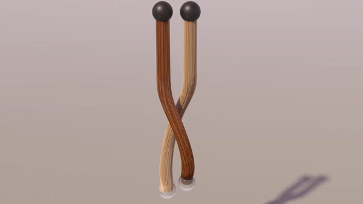

Milestone Report: Material Point Method
CS184 - Spring 2021
Teresa Yang, Stephen Lin, Nikki Suppala, and Brandon Illescas
Preliminary Results
Results so far:
|

|

|
|
|

|
Current Progress
Reflect on progress relative to your plan.
Updated Workplan
| Week | Tasks |
|---|---|
|
4/12/21 |
Read through papers Choose a Material Point Method optimization method (e.g. Lagrangian hybrid, Moving Least Squares) Familiarize ourselves with existing code repositories Familiarize ourselves with Mitsuba renderer |
|
4/19/21 |
Work on implementing standard MPM Make sure what we’re doing works well with Mitsuba renderer |
|
4/26/21 |
Finish Material Point Method Begin incorporating optimization of choice |
|
5/3/21 |
Finish optimization Inevitable debugging Presentation prep |